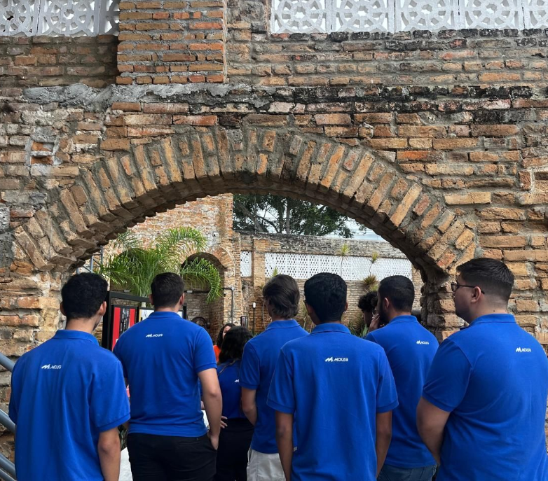

CyberSecurity
Meu envolvimento com cibersegurança se concentra na área de SOC (Security Operations Center) e Blue Team, focando no monitoramento contínuo de sistemas, detecção de ameaças e resposta a incidentes de segurança.
Utilizo ferramentas especializadas como Wazuh, Suricata e MISP para criar um ambiente de monitoramento robusto e eficiente.

O que é um SOC?
Um SOC (Security Operations Center) é um centro de operações de segurança responsável pelo monitoramento, detecção e resposta a incidentes de segurança em tempo real. É o coração da defesa cibernética de uma organização, onde analistas trabalham continuamente para identificar ameaças e proteger sistemas e dados.
Dentro do SOC, o Blue Team é a equipe de defesa, focada em proteger a organização contra ataques. Enquanto o Red Team simula ataques, o Blue Team desenvolve estratégias de detecção, monitoramento e resposta para manter os sistemas seguros.
Ferramentas de Segurança
Wazuh
SIEM / XDRPlataforma open source de segurança que oferece detecção de intrusões, monitoramento de integridade de arquivos, análise de logs e resposta a ameaças. Funciona como um SIEM (Security Information and Event Management) completo.
Suricata
IDS / IPSMotor de detecção de ameaças de rede de alto desempenho, que funciona como IDS (Intrusion Detection System) e IPS (Intrusion Prevention System). Analisa tráfego de rede em tempo real para identificar atividades maliciosas.
MISP
Threat IntelligencePlataforma de compartilhamento de inteligência de ameaças que permite coletar, armazenar e distribuir indicadores de comprometimento (IoCs). Facilita a colaboração entre equipes e organizações na luta contra ameaças cibernéticas.
Como Tudo se Conecta
A combinação dessas três ferramentas forma um pipeline de segurança robusto. O Suricata monitora o tráfego de rede e identifica atividades suspeitas. O Wazuh centraliza os logs e eventos de múltiplas fontes, incluindo o Suricata, e aplica regras de detecção para gerar alertas. O MISP alimenta o sistema com inteligência de ameaças atualizada, permitindo uma detecção mais precisa e contextualizada.
Esse ecossistema integrado permite que o Blue Team tenha uma visão completa do ambiente, desde o tráfego de rede até a inteligência global de ameaças, possibilitando respostas rápidas e eficientes a incidentes de segurança.